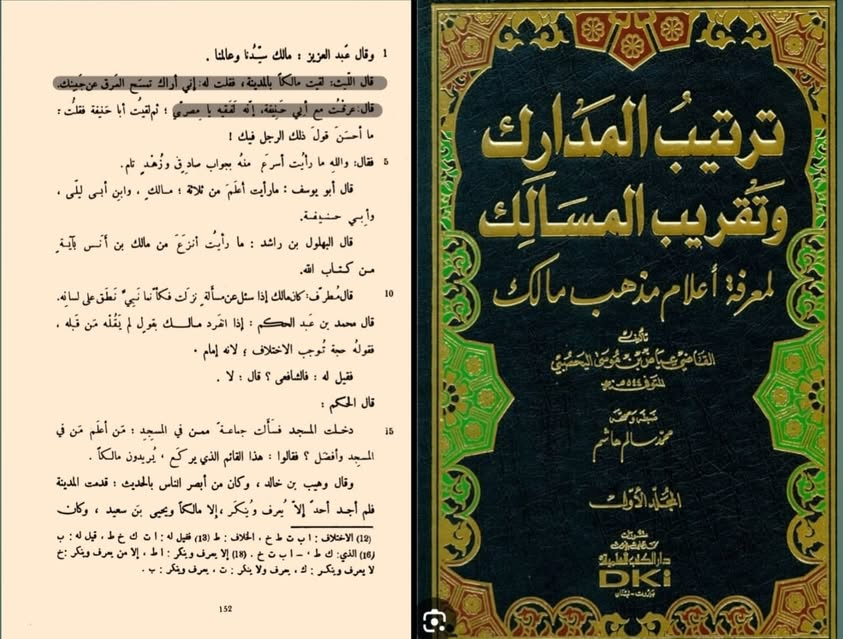

লাইস রাহ. বলেন— আমি মদিনায় ইমাম মালিক রাহ-এর সঙ্গে সাক্ষাত করলাম এবং তাঁকে বললাম—…
২৪ জুন, ২০২৪
লাইস রাহ. বলেন— আমি মদিনায় ইমাম মালিক রাহ-এর সঙ্গে সাক্ষাত করলাম এবং তাঁকে বললাম— আমি দেখছি আপনি আপনার কপাল থেকে ঘাম মুছছেন। তিনি বললেন, আমি ইমাম আবু হানিফা রাহ-এর সঙ্গে (তর্কে লেগে) ঘেমে গেছি। হে মিশরীয়! নিশ্চয়ই তিনি একজন প্রকৃত ফকিহ।
قال الليث: لقيت مالكاً بالمدينة، فقلت له: إني أراك تمسح العرق عن جبينك. قال: عرقت مع أبي حنيفة، إنه لفقيه يا مصري.
[তারতিবুল মাদারিক, কাজি ইয়াজ— ১/১৫২]
কোরআন ও হাদিসের পুঙ্খানুপুঙ্খ জ্ঞানে সমৃদ্ধ না হলে কেউ ‘ফকিহ’ হতে পারে না। ‘ফকিহ’ হওয়ার স্বীকৃতি দেয়া মানে সকল জ্ঞানের স্বীকৃতি দেয়া। নিঃসন্দেহে ইমাম আবু হানিফা রাহ. প্রথম স্তরের মুজতাহিদ ফকিহ ছিলেন।
লাইস রাহ. বলেন— আমি মদিনায় ইমাম মালিক রাহ-এর সঙ্গে সাক্ষাত করলাম এবং তাঁকে বললাম— আমি দেখছি আপনি আপনার কপাল থেকে ঘাম মুছছেন। তিনি বললেন, আমি ইমাম আবু হানিফা রাহ-এর সঙ্গে (তর্কে লেগে) ঘেমে গেছি। হে মিশরীয়! নিশ্চয়ই তিনি একজন প্রকৃত ফকিহ।
قال الليث: لقيت مالكاً بالمدينة، فقلت له: إني أراك تمسح العرق عن جبينك. قال: عرقت مع أبي حنيفة، إنه لفقيه يا مصري.
[তারতিবুল মাদারিক, কাজি ইয়াজ— ১/১৫২]
কোরআন ও হাদিসের পুঙ্খানুপুঙ্খ জ্ঞানে সমৃদ্ধ না হলে কেউ ‘ফকিহ’ হতে পারে না। ‘ফকিহ’ হওয়ার স্বীকৃতি দেয়া মানে সকল জ্ঞানের স্বীকৃতি দেয়া। নিঃসন্দেহে ইমাম আবু হানিফা রাহ. প্রথম স্তরের মুজতাহিদ ফকিহ ছিলেন।
